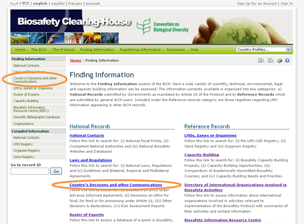
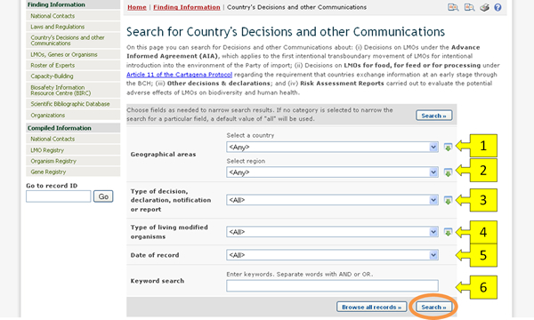
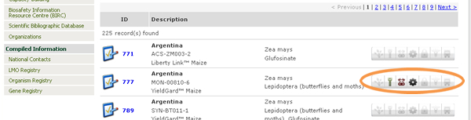
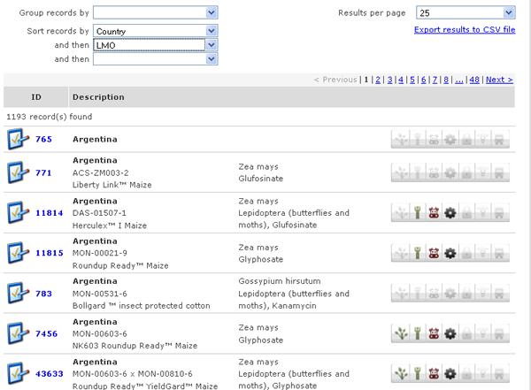
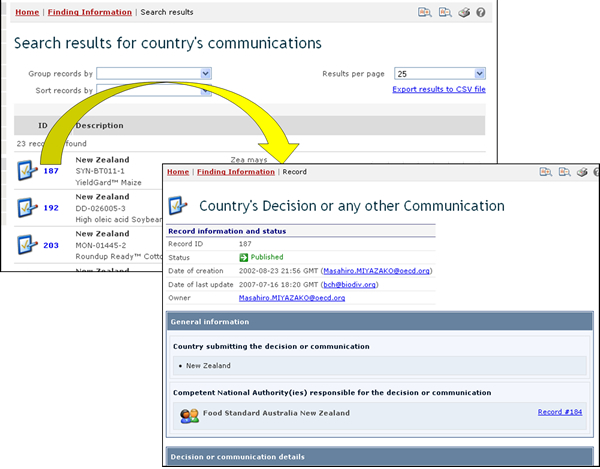

URL: http://bch.cbd.int/database/decisions/
Under the Cartagena Protocol, Parties are responsible for making available through the BCH information regarding their relevant decisions, declarations and other communications.
The search page for information about Country's Decisions and other Communications can be accessed from the Finding Information drop down menu on the navigation bar, or from the link in the left-hand menu of the Finding Information page, or from Country’s Decisions and other Communication link in the text on that page.

This database enables users to search for decisions and other communication related to:
-
Decisions on Contained use of LMOs (Article 6.2)
-
Decisions on LMOs for direct use as food or feed, or for processing (Article 11, LMOs-FFPs)
-
Decisions on domestic use of an LMO, including its placing on the market
-
Decisions on import of LMOs
-
-
Decisions on LMOs for intentional introduction into the environment (Article 7-10)
-
Decisions taken in accordance with the Advance Informed Agreement (AIA) procedure specified in Article 10
-
Decisions taken in accordance with your domestic regulatory framework
-
-
Decisions on Pharmaceuticals (Article 5)
-
Decisions on Transit of LMOs (Article 6.1)
-
Decisions under the Simplified Procedure (Article 13)
-
Other decisions, notifications, declarations or communications
-
Communication of information on 'Handling, Transport, Packaging and Identification' (Article 18)
-
Declarations made upon ratification of or accession to the Protocol
-
Declaration that, in the absence of a domestic regulatory framework, decisions on LMOs-FFPs will be taken according to Article 11.6
-
Notifications about illegal transboundary movements of LMOs (Article 25.3)Notification about the unintentional transboundary movement of LMOs (Article 17.1)
-
Notifications that a Party does not have access to the Biosafety Clearing-House (Article 11.1)
-
Notifications that domestic regulations shall apply with respect to specific imports of LMOs (Article 14.4)
-
-
Risk Assessments
On the Search for Country’s Decisions and Other Communications page there are several search criteria boxes:
-
Country: Selection list field for selecting a country
-
Region: Selection list field for selecting a region
-
Type of decision, declaration, notification or report: Selection list field for narrowing the search results to specific types of decisions, declarations, notifications or reports
-
Type of living modified organisms: Additional search criteria field to add different search criteria.
-
Date of record: Date field for narrowing the search results to a time interval
-
Keyword search: Keyword field for narrowing the results by keyword
See “Using the search pages” to learn about types of fields and their operation.

Search results are displayed in the Search results for country’s communications page. Firstly, a set of icons is displayed to the right of each record. These icons indicate which categories of LMO use each record refers to. For example, some records may contain decisions regarding an LMO for use as feed, food and processing, while others may contain a decision about an LMO for introduction into the environment.

An icon in colors means that the record involves that category of LMO use, while a grey icon indicates that it does not. The meaning of each icon is described in the following table.
| |
Intentional introduction into the environment |
| Direct use as food | |
| Direct use as feed | |
| Processing | |
| Contained use | |
| Pharmaceutical | |
| Transit |
In addition to the features described in “Managing Search Results”, this results page provides features for grouping and sorting the records in the result list. The grouping feature displays a grouped view of the results by selecting an option in the “Group records by” box. For example, by selecting “Country”, the result list is arranged into folders, so that all records from the same country appear inside a folder labeled with the country name. Clicking on the arrow to the right of the folder will open the folder and show its records.

The “Sort records by” box allows sorting the records by the specified criteria. Multiple sort stages can be defined by using the additional “and then” fields that appear every time a sorting option is selected. For example, search results may be sorted by country by selecting the “Country” option in the “Sort records by” box; records from the same country can be further sorted by LMO by selecting “LMO” in the “and then” field that appears.

Additionally, the results page contains a box in which the user can select how many records are to be shown in each page There is also a link to download the search results in CSV (comma separated values) format, so that they can be used and inserted into other documents and handled by other applications.
Example: A user wishes to identify all the decisions taken by New Zealand under Article 11 of the Protocol. Select New Zealand in the Select a country box. Select Decision on LMOs for direct use as food or feed, or for processing (Article 11, LMOs - FFP) in the Type of decision, declaration, notification or report box. Click on the Search button.
The search results are displayed as a list of records. Detailed information about each record can be viewed by clicking on the record ID number (in bold blue type).


This picture was taken on February 2010 with the only purpose of providing an example on the usage of the BCH.